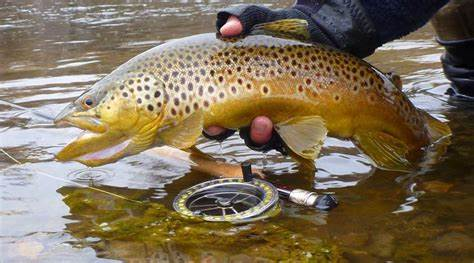

Trout are a fresh water species that thrive within the rivers of Montana. The state contains nine trout rivers which stretch nearly 169,829 miles.
There are several species of trout that call the rivers of Montana home. Trout provide an opportunity for outdoor activities and also provide a reliable source of food. A 2 ounce filet contains several amino acids and loads of protien.
Not a lot of people target fish for food. Many anglers hit the river to catch trout out of pure enjoyment through fly fishing. A majority of a fish's diet is consumed below the surface of the water; however, many anglers can trick fish into surfacing and eating a fly of choice on the top of the water. This was what fly fisherman live for.